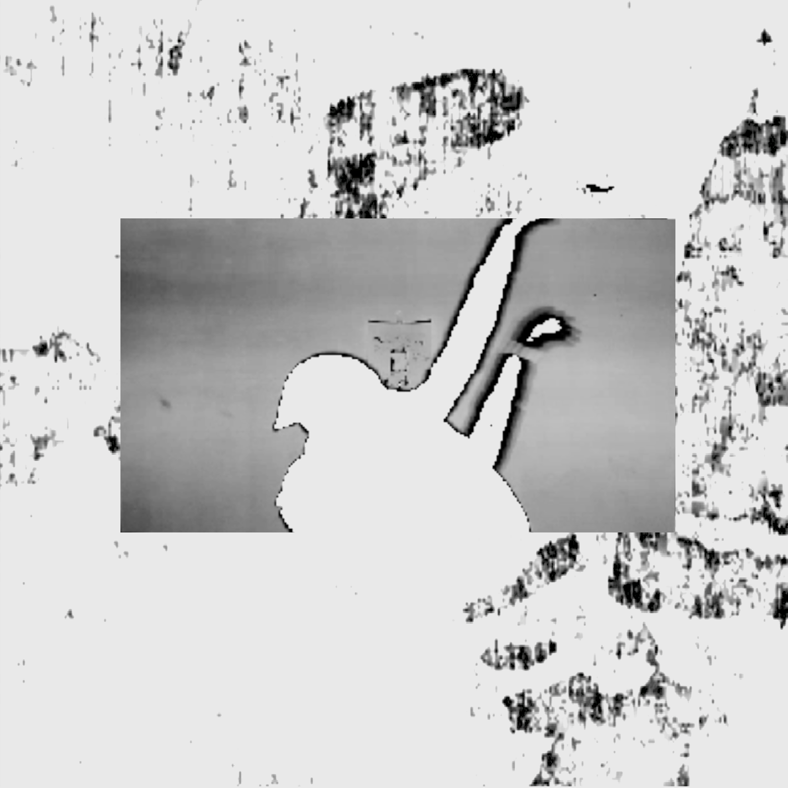

Cillic Archive
News
Information and redirects for most recent releases.
Oblong Black Room (Single/Video)
On 8/2/2020 the FSO releases the music video for "Oblong Black Room." It's an alternate mix of a track set to appear on their forthcoming album, Galloway SSK.